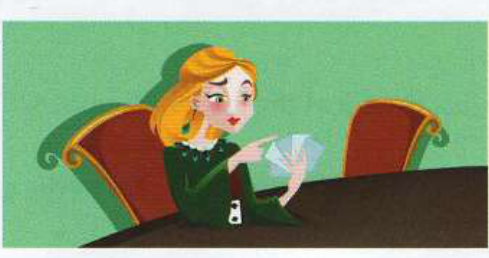
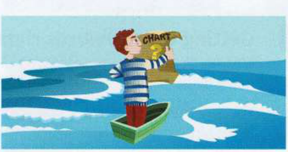
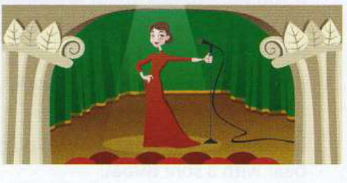

Exercises
4.1
Answer these questions. Use the information in A opposite to help you.
1
How do metaphors describe people, objects and situations?
2
In what kind of writing are metaphors frequently used?
3
How are the metaphors used in literary contexts different from those used in idioms?
4
Why do you think it can sometimes be useful for you to be aware of the origins of idioms?
4.2
Which idioms do these pictures make you think of?
1

3

2
4

4.3
Complete each idiom.
1
Tax legislation can be a ............................................................ for new businesses; there are so many rules to follow.
2
Our company is planning to ............................................................ a new marketing campaign in April.
3
Shouting at his manager got Tom a black ............................................................ at work.
4
I'm sure your boss will ............................................................ sense eventually and agree to your plan.
5
At first I didn't see the ............................................................ of going to university or college, but then I saw the ............................................................ and realised studying would give me more choices for the future.
6
If she doesn't offer to write the report, I'll ............................................................ rank on her and tell her to do it.
7
Noor is ............................................................ a crossroads in her life now that she has finished her medical degree. She has to decide what she is going to specialise in.
8
George doesn't know much about the job, but I'm sure he'll be able to ............................................................ his way through the interview.
4.4
Replace the underlined part of each sentence with an idiom.
1
Everyone else was laughing, but Katie couldn't understand what was funny.
2
Eva is making no progress with her research.
3
BritTel is going to work together with SatCom to lobby the government.
4
The teacher was furious when Matt refused to do his homework.
5
The errors in the report really weren't Sam's fault, but he was blamed for them.
6
Tina is hoping her father will eventually become more reasonable and let her drive the family car.
7
Unfortunately, my brother's transport business was very seriously affected by the rise in fuel prices.
8
As the president of a major company, Ross is used to being the focus of attention.